UDN
Search public documentation:
MaterialExamplesJP
English Translation
中国翻译
한국어
Interested in the Unreal Engine?
Visit the Unreal Technology site.
Looking for jobs and company info?
Check out the Epic games site.
Questions about support via UDN?
Contact the UDN Staff
中国翻译
한국어
Interested in the Unreal Engine?
Visit the Unreal Technology site.
Looking for jobs and company info?
Check out the Epic games site.
Questions about support via UDN?
Contact the UDN Staff
UE3 ホーム > マテリアルとテクスチャ > マテリアルのサンプル
マテリアルのサンプル
概要
コンセプトとテクニック
Specularity (スペキュラリティ、鏡面反射性）
スペキュラリティは、サーフェスに当たったライトが反射することによって生じるハイライト (最も明るい部分) です。一般に、サーフェスに光沢があるほど、スペキュラのハイライトは小さく、明るく輝くようになります。 マテリアル ノード上の Specular (スペキュラ) 入力チャンネルは、スペキュラ ハイライトのカラーと明度を制御するのに使用されます。他方、SpecularPower (スペキュラの累乗) 入力チャンネルはハイライトの減退あるいはタイト性を制御します。
マテリアル ノード上の Specular (スペキュラ) 入力チャンネルは、スペキュラ ハイライトのカラーと明度を制御するのに使用されます。他方、SpecularPower (スペキュラの累乗) 入力チャンネルはハイライトの減退あるいはタイト性を制御します。
Environment Maps (環境マップ)
環境マッピング (すなわち反射マッピング) は、容易に実装が可能です。これによって、リアルタイムの反射を用いることが可能になったり、あるいは、プレレンダリングされたキューブマップを使用して、オブジェクトが環境を反射するように見せることが可能になります。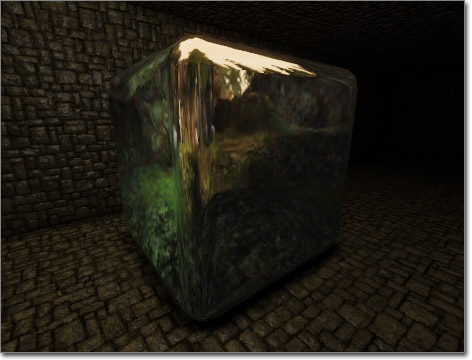
Transform (変換) (Tangent (タンジェント) -> World (ワールド)) を通じて渡される、 ReflectionVector (反射ベクター) 式は、環境マップが割り当てられている TextureSample (テクスチャサンプル) のための、UV テクスチャ座標として使用されます。 これはキューブマップ (RenderToTextureCube または静的キューブマップ) をメッシュのサーフェスにマッピングして、反射しているように見せます。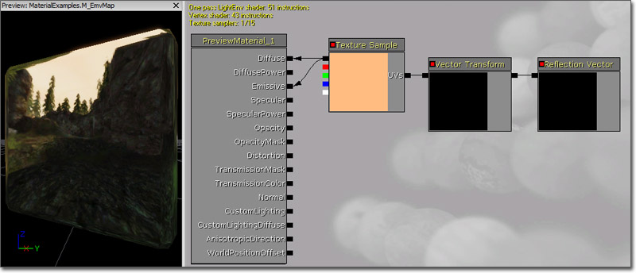
Render To Texture のページに含まれている情報は、次のとおりです。すなわち、1 つは、リアルタイムの反射のために RenderToTextureJP#SceneCaptureCubeMapActor [シーンキャプチャー キューブマップ アクタ?[SceneCaptureCubeMapActor [シーンキャプチャー キューブマップ アクタ]]] をセットアップする場合についての情報。もう 1 つは、 静的キャプチャーの保存 のために SceneCaptureCubeMapActor を使用する場合についての情報です。 新たなキューブマップを手動で作成するには、 コンテンツ ブラウザ 内で右クリックして、コンテクストメニューから New TextureCube (新たなテクスチャ キューブ) を選択します。 もう1つの方法は、 コンテンツ ブラウザ 内で、 [_New_] ボタンをクリックし、 [_Factory_] (ファクトリ) コンボボックスから TextureCube (テクスチャ キューブ) オプションを選択します。
もう1つの方法は、 コンテンツ ブラウザ 内で、 [_New_] ボタンをクリックし、 [_Factory_] (ファクトリ) コンボボックスから TextureCube (テクスチャ キューブ) オプションを選択します。
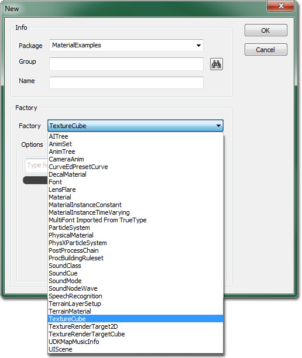
次に、当該の環境の 6 つの画像をインポートして、それらを、 新たなテクスチャキューブの Face Neg/Pos X/Y/Z プロパティで利用できるスロットに割り当てます。CubeTexture の左右のサイドは、テクスチャの最上部となっている画像の上部にすべて向きが合わせられます。また上下のサイドは、両方とも同じトップの向きとなります (以下の画像を参照)。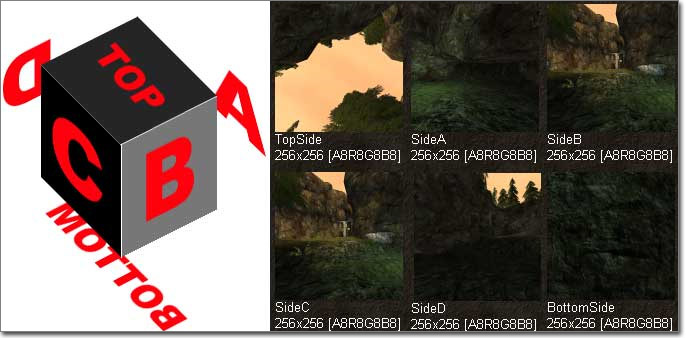
テクスチャをテクスチャ キューブに割り当てる際、次のスロットに配置します。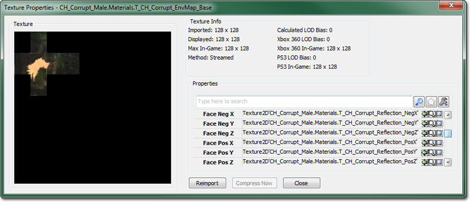
テクスチャ キューブのセットアップが完了したら、それを、マテリアル エディタ内で新たな TextureSample (テクスチャサンプ) に割り当てます。 この時点で、 TextureSample の RGB 出力を、マテリアルの Diffuse (ディフューズ) 入力チャンネルに接続することができますが、エラーが発生します。エラーを修正するには、新たな ReflectionVector 式、および、新たな Transform (変換) 式を追加する必要があります。 ReflectionVector（反射ベクター） の出力を Transform (変形) の入力に接続します。さらに、 Transform (変換) の出力を TextureSample (テクスチャサンプル) の UV 入力に接続します。Mask (マスク)
マスクとは、グレースケールテクスチャ (すなわち R、または G、B、A のいずれかの単一チャンネル) であって、マテリアル内でエフェクト領域を制限するために使用されます。マスクは、かなり頻繁に他のテクスチャの単一チャンネルの内部に含まれます。たとえば、ディフューズまたは法線マップのアルファチャンネルの内部に含まれます。未使用のチャンネルを活用して、マテリアルでサンプリングされるテクスチャ数を最小限に抑えるには、良い方法です。通常、あらゆるテクスチャのあらゆるチャンネルがマスクとして考えることができるとともに、マスクとして使用することもできます。 マスクの例をあげると、次のような画像のようになります。 テクスチャ マスクの典型的な使用法には、 Multiply (乗算) 式を使って、ある値にマスクの値をじるというものがあります。これによって、マテリアルは、マスクの値が 0.0 より大きい部分にのみ「ある値」を適用するように、効率的にできるようになります。こうして、エフェクトの値の強度を、マスクの値に基づいて変化させることができるのです。
このテクニックは、通常、明るい部分をもつマテリアルとともに使用されます。エミッシブ マスクは、明るい部分が白 (またはグレイの変化するシェード) で、他がすべて黒の場合に作成されます。これによる利点は、明るい部分を適用する場所を限定することができるようになるということだけではありません。マテリアル内部の明るい部分のカラーを完全に制御できるため、テクスチャアーティストに変更してもらったり、テクスチャを再インポートしてもらうことなく、素早くカラーに変更を加えることもできるのです。
テクスチャ マスクの典型的な使用法には、 Multiply (乗算) 式を使って、ある値にマスクの値をじるというものがあります。これによって、マテリアルは、マスクの値が 0.0 より大きい部分にのみ「ある値」を適用するように、効率的にできるようになります。こうして、エフェクトの値の強度を、マスクの値に基づいて変化させることができるのです。
このテクニックは、通常、明るい部分をもつマテリアルとともに使用されます。エミッシブ マスクは、明るい部分が白 (またはグレイの変化するシェード) で、他がすべて黒の場合に作成されます。これによる利点は、明るい部分を適用する場所を限定することができるようになるということだけではありません。マテリアル内部の明るい部分のカラーを完全に制御できるため、テクスチャアーティストに変更してもらったり、テクスチャを再インポートしてもらうことなく、素早くカラーに変更を加えることもできるのです。
 マスクの典型的な使用法には他にも、2 つのエフェクトをブレンドするというものがあります。このためには、 LinearInterpolate (線形補間) 式のアルファ入力としてマスクを使用します。これによって、片方のエフェクトあるいは値がマスクの白い部分に適用され、もう片方のエフェクトがマスクの黒い部分に使用されることになります。中間にはその 2 つのエフェクトが混合したものが適用されます。
マスクの典型的な使用法には他にも、2 つのエフェクトをブレンドするというものがあります。このためには、 LinearInterpolate (線形補間) 式のアルファ入力としてマスクを使用します。これによって、片方のエフェクトあるいは値がマスクの白い部分に適用され、もう片方のエフェクトがマスクの黒い部分に使用されることになります。中間にはその 2 つのエフェクトが混合したものが適用されます。
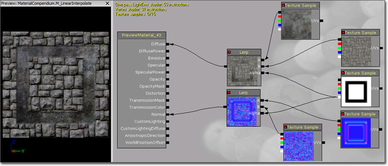
Bump Mapping (バンプ マッピング)
「Unreal Engine 3」では、2 つのメインとなるテクニックを使って、バンプ マッピング マテリアルを作成します。以下はその概要です。- Normal Mapping (法線マッピング)-- シンプルなバンプ マップの単なる高さ情報ではなく、XYZ ベクター情報を使用します。
- オフセット バンプマッピング - 法線マッピングに加えて、テクスチャ座標の修正によって、バンプ (凸部) のバーチャルな高さの変位を行います。
Normal Mapping (法線マッピング)
法線マップ マテリアルでは、テクスチャの RGB 成分として保存されている XYZ 情報が使用されます。これは次にテクスチャのサーフェスの角度に変換されます。これにより、法線マップの方向に応じて光が異なって反射するため、深さが表現されます。 法線マッピングを使用するマテリアルを作成することは、「Unreal Engine 3」では非常に簡単です。まず必要になるのが法線マップです。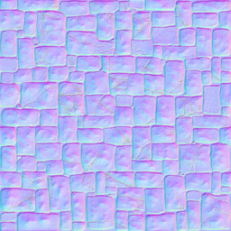
法線マップをインポートして使用できるようになったら、TextureSample に割り当てます。そして次に、その RGB 出力を、基底となるマテリアルノードの Normal (法線) 入力チャンネルに接続します。 光源が法線マップ化されたサーフェスと相互作用して、ディテールが著しく向上して見えるようになったことがはっきりと分かります。 Specular (スペキュラ) 入力チャンネルへ接続されているディフューズ テクスチャが加わわると、このエフェクトが分かりやすくなります。
光源が法線マップ化されたサーフェスと相互作用して、ディテールが著しく向上して見えるようになったことがはっきりと分かります。 Specular (スペキュラ) 入力チャンネルへ接続されているディフューズ テクスチャが加わわると、このエフェクトが分かりやすくなります。
法線マップ テクスチャのための各種設定項目
法線マップからアルファ チャンネルが削除されるという問題、または法線マップでディテールが完全に描画されないという問題が発生した場合は、法線マップを編集することができます。オフセット シェーダーを使用する予定があり、高さマップが法線マップのアルファ チャンネル内にある場合は、 TC_NormalMap 以外のテクスチャ圧縮方法を使用する必要があります。この場合は、法線マップを TC_NormalMapAlpha に設定して、アルファ チャンネルが維持されるようにする必要があります。この方法では、上記で説明した視差バンプ マッピング シェーダーを使用することができます。 法線マップでレポートされるはずの光源情報がレポートされない場合は、法線マップ自体の設定を変更する必要がある場合もあります。 これが発生するのは、他の部分を一切編集せずに一般的な法線マップ テクスチャをインポートした場合です。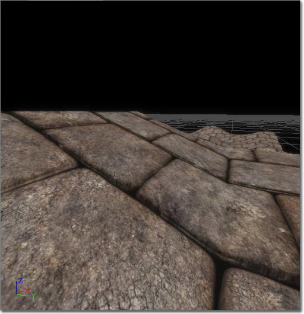
このテクスチャ自体には、あまり深さがありません。動的な光源を持つシーンに適用した場合は、ブラシサーフェス全体で多数のエラーが発生します。ブラウザでテクスチャを調整 (コンテンツ ブラウザ で法線マップのテクスチャをダブルクリックして設定項目ウィンドウを表示させます) することにより、結果を向上させることができます。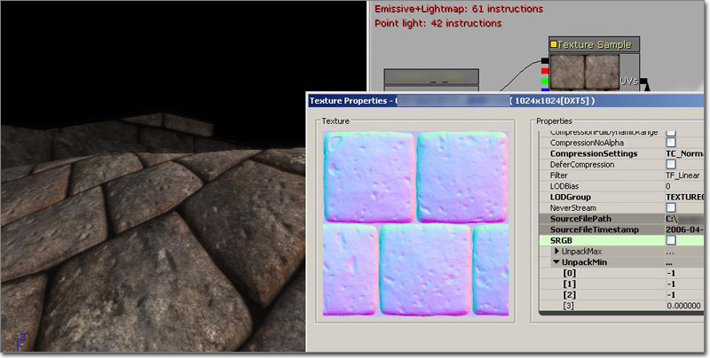
以下は、より良い法線マップを実現するための設定内容です。 SRGB チェックボックスはオフにする。 UnpackMin の最初の 3 つのチャンネルは、-1 に設定する。LOD グループは TEXTUREGROUP_WorldNormalMap とする。 この設定により、法線マップの深みが増します。ここでは、オフセット シェーダーが使用されていることにも注目してください。法線マップの圧縮は、 TC_NormalMapAlpha に設定します。高さマップは、法線マップのアルファ チャンネル内にあります。これは適切な設定です。 UnpackMin 設定をさらに低くすると、より多くのディテール情報を取得できます。法線マップが適切にディテールを表示していない場合は、この設定を変更してみてください。ただし、テクスチャが歪む可能性もあります。Offset Bump Mapping (オフセット バンプ マッピング)
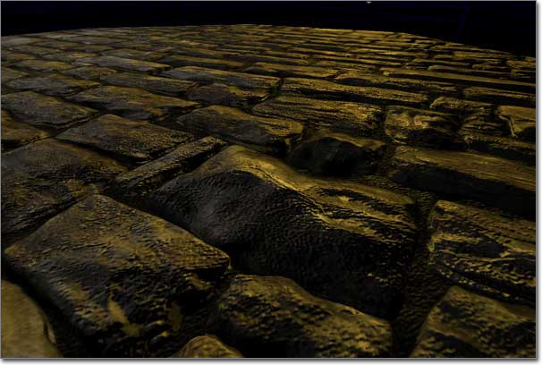
オフセット バンプ マッピングでは、ピクセルの場所をサーフェスからずらして見せることによって、法線マップの深さ表現をさらに豊かになります。このためには、UV 座標を創造的に修正します。上記のスクリーンショットは完全な平面ですが、このような急角度からでもレンガが表面から浮き出ているように見えます。 法線マップとオフセット バンプ マップの違いについては、以下を参照してください。右の画像のレンガの隅に注目してください。左側のレンガには凸部がありますが、実際は平坦です。一方、右側のレンガには本当に高さがあるように見えます。
Heightmap (ハイトマップ、高さマップ）
オフセット バンプ マッピングを使用するマテリアルを作成する場合は、マテリアル (ディフューズ、スペキュラ、法線など) で使用するテクスチャの通常の種類に加えて、 ハイトマップ も必要になります。ハイトマップとは、グレーのシェードによって高さを表すグレースケールテクスチャです。このチュートリアルの場合、その情報は単に視覚化を目的として、別のテクスチャのアルファ チャンネルに入れられています。多くの場合、 ハイトマップ は、法線マップ テクスチャのアルファ チャンネルに含まれます。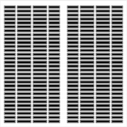
Transmission (通過)
Transmission とは、サーフェスの反対側から光源が通過できる機能のことです。このエフェクトは sub-surface scattering (SSS、表面下散乱) に似ていますが、複雑さにおいては SSS にはまったく及びません。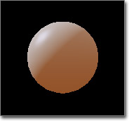
マテリアルの Transmission を制御する入力チャンネルは 2 つあります。 TransmissionMask と TransmissionColor です。 TransmissionMask 入力チャンネルは単独で使用するか、TransmissionColor と共に使用することができます。他方、TransmissionColor 入力チャンネルは、値を TransmissionMask に入力して機能させる必要があります。値が TransmissionMask 入力チャンネルにのみ渡されると、その値は Transmission のカラーと明度を制御します。TransmissionColor 入力チャンネルとともに使用される場合、TransmissionMask は TransmissionColor と掛け合わされて、トータルの Transmission を算出します。つまり、 Constant3Vector (定数3ベクター) の形で、カラーを TransmissionColor に渡すことができ、 Constant (定数) を TransmissionMask に渡すことによって、Transmission の明度を制御できるということになります。
TransmissionMask 入力チャンネルは単独で使用するか、TransmissionColor と共に使用することができます。他方、TransmissionColor 入力チャンネルは、値を TransmissionMask に入力して機能させる必要があります。値が TransmissionMask 入力チャンネルにのみ渡されると、その値は Transmission のカラーと明度を制御します。TransmissionColor 入力チャンネルとともに使用される場合、TransmissionMask は TransmissionColor と掛け合わされて、トータルの Transmission を算出します。つまり、 Constant3Vector (定数3ベクター) の形で、カラーを TransmissionColor に渡すことができ、 Constant (定数) を TransmissionMask に渡すことによって、Transmission の明度を制御できるということになります。
Edge Lighting (エッジライト)
リムライト (すなわちエッジライト) は、映画やシネマティックスにおいて一般的に使用されているテクニックです。光源がキャラクターのシルエットを照らすために使用されることによって、キャラクターをシーンから際立たせたり、焦点を当てることができます。これは通常のライトを使用して簡単に実現できますが、余分なセットアップが必要になるとともに、アニメーションではライトがキャラクターから離れないようにする必要があります。これと同じ基本的なエフェクトがマテリアル内で実行されると、エフェクトの制御がより自由になります。また、他の目的でもこのエフェクトを利用することができます。たとえば、キャラクターに霊妙な雰囲気をもたせたり、アンリットなサーフェスに実際に光が当たっている様子をシミュレートすることによってパフォーマンスの負荷を軽減することもできます。
パラメータ化
パラメータ化とは、マテリアル内でパラメータ式を使用することです。パラメータは、マテリアルのインスタンスまたはコードによって変更可能です。パラメータ化の主な利点には、すべてのマテリアルがもっていなければならない機能をすべて含んでいるマスター マテリアルを作成することができるということがあります。このマスター マテリアルでは、 TextureSamples や重要な Constants (定数) 、 Constant3Vectors (定数 3 ベクター) といった特質を、 TextureSampleParameter2D (テクスチャサンプルパラメータ 2D) および ScalarParameter (スケールパラメータ) 、 VectorParameter (ベクターパラメータ) といった式に置き換えることができます。マスターマテリアルのインスタンスが作られると、マテリアルのこれらの特質を変更することによって、視覚上まったく異なるマテリアルを作成することができます。この方法をとれば、最初から新たなマテリアルを作成することによって時間とリソースを無駄にすることはありません。 詳細については、 [[InstancedMaterialsJP][インスタンス化したマテリアル] および Material Instance Constant のページをご参照ください。例
このセクションでは、上記およびその他で説明したコンセプトとテクニックのうち、その多くについての説明となる完全なマテリアルの例をあげています。最初は、かなり単純なノードネットワークをもつマテリアルから始め、進行するにつれて複雑にしていきます。Shiny (つや)
このセクションの例では、さまざまなタイプのつやをもつサーフェスの作成を扱います。このためには、 スペキュラリティ? および 環境マップ を使用します。Matte (つや消し)
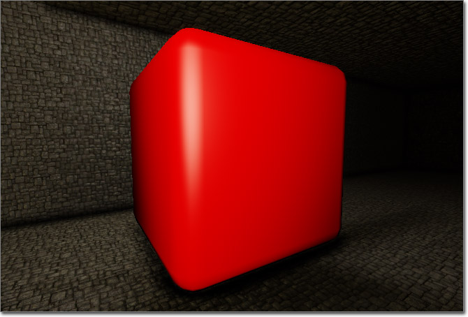
このサーフェスの外見は平坦ですが、それでもスペキュラ ハイライトをいくらかもっています。これが役立つのは、光沢がそれほどないか、まったくないサーフェスを作成する場合です。たとえば、ある種のプラスチック、あるいは、つや消しが塗られているサーフェスなどを作成する場合が該当します。 例の中では、ディフューズカラーは、明るい赤 [MaterialsCompendiumJP#Constant3Vector][Constant3Vector (定数3ベクター)]] (1.0, 0.0, 0.0) になっていますが、これはどのカラーでもよく、 TextureSample を使用することもできます。
SpecularPower は、値が 5.0 の Constant (定数) によって制御されています。これは、ハイライトを拡散させます。他方、スペキュラカラーは、 Constant3Vector (定数3ベクター) です。これの値は、フェードバージョンの Diffuse (0.67, 0.22, 0.22) で、ハイライトを弱めます。
例の中では、ディフューズカラーは、明るい赤 [MaterialsCompendiumJP#Constant3Vector][Constant3Vector (定数3ベクター)]] (1.0, 0.0, 0.0) になっていますが、これはどのカラーでもよく、 TextureSample を使用することもできます。
SpecularPower は、値が 5.0 の Constant (定数) によって制御されています。これは、ハイライトを拡散させます。他方、スペキュラカラーは、 Constant3Vector (定数3ベクター) です。これの値は、フェードバージョンの Diffuse (0.67, 0.22, 0.22) で、ハイライトを弱めます。
Glossy (光沢)
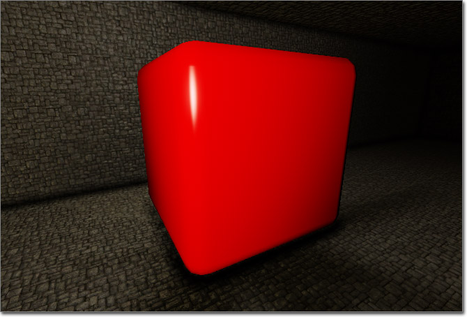
このサーフェスの外見は、タイトで明るいスペキュラ ハイライトをともない、非常に光沢があります。あらゆる種類の光沢のあるサーファスを作成するのに便利です。たとえば、ガラスや光沢のあるプラスティック、車の塗料などが該当します。 例の中では、ディフューズカラーは、明るい赤 [MaterialsCompendiumJP#Constant3Vector][Constant3Vector]] (1.0, 0.0, 0.0) になっていますが、これはどのカラーでもよく、 TextureSample を使用することもできます。
SpecularPower は、値が 75.0 の Constant によって制御されています。これによって、ハイライトが著しく焦点化されています。他方、スペキュラカラーは、 Constant3Vector です。この値は、オーバーライドされたバージョンの Diffuse (3.0, 1.0, 1.0) で、ハイライトを明るくはっきりとさせています。
例の中では、ディフューズカラーは、明るい赤 [MaterialsCompendiumJP#Constant3Vector][Constant3Vector]] (1.0, 0.0, 0.0) になっていますが、これはどのカラーでもよく、 TextureSample を使用することもできます。
SpecularPower は、値が 75.0 の Constant によって制御されています。これによって、ハイライトが著しく焦点化されています。他方、スペキュラカラーは、 Constant3Vector です。この値は、オーバーライドされたバージョンの Diffuse (3.0, 1.0, 1.0) で、ハイライトを明るくはっきりとさせています。
Metallic (メタリック)
 このサーフェスは、かなり暗いディフューズカラーをともなっていると同時に、拡散しているけれどもかなり明るいスペキュラ ハイライトをともなっているため、サテンのように見えます。メタリックのサーフェスや、絹織物のようなサテン仕上げのサーフェスを作成するのに適しています。
このサーフェスは、かなり暗いディフューズカラーをともなっていると同時に、拡散しているけれどもかなり明るいスペキュラ ハイライトをともなっているため、サテンのように見えます。メタリックのサーフェスや、絹織物のようなサテン仕上げのサーフェスを作成するのに適しています。
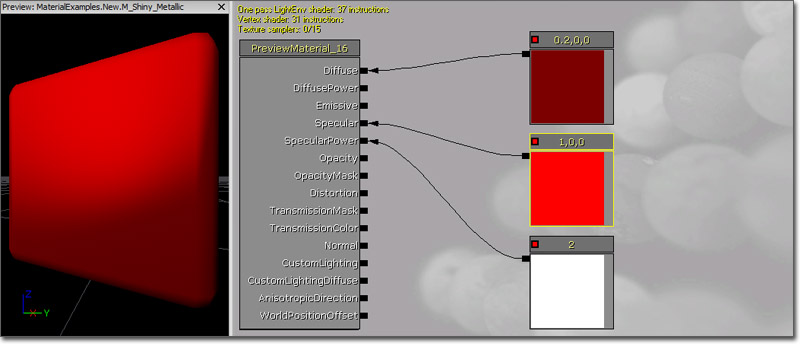
例の中では、ディフューズカラーが、暗い赤 [MaterialsCompendiumJP#Constant3Vector][Constant3Vector]] (0.2, 0.0, 0.0) になっています。このエフェクトでは、ベースとなるカラーとして暗いカラーを使用することが不可欠です。というのも、スペキュラカラーは基本的にサーフェスの実際の色であるからです。もし、 TextureSample を使用するならば、 Constant と容易に掛け合わせて暗くすることができるため、同様のエフェクトを得ることができます。 SpecularPower は、値が 2.0 の Constant によって制御されています。これは、ハイライトを著しく拡散させます。他方、スペキュラカラーは、 Constant3Vector です。これの値は、明るいバージョンの Diffuse (1.0, 0.0, 0.0) で、ハイライトを明るくさせます。Reflection (反射)
 このマテリアルはキューブマップの反射 (すなわち、環境マップ) を使用しています。これによって、サーフェスは光沢が出ます。ガラスや水、クロムメッキなど反射するサーフェスを作成するのに役立ちます。
このマテリアルはキューブマップの反射 (すなわち、環境マップ) を使用しています。これによって、サーフェスは光沢が出ます。ガラスや水、クロムメッキなど反射するサーフェスを作成するのに役立ちます。
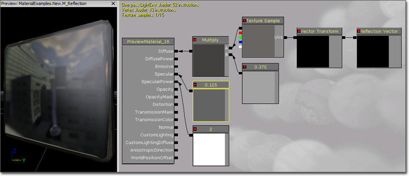
ディフューズカラーは、環境マップによって制御されています。これは、UV テクスチャ座標のために、 [MaterialsCompendiumJP#Transform][Transform (変換)]] (Tangent (タンジェント) -> World (ワールド)) を経由して渡される ReflectionVector (反射ベクター) を使用します。環境マップが、 Constant (定数) 0.375 と掛け合わされることによって、反射度が弱まります。 SpecularPower の値は 2.0 であり、ハイライトが非常に拡散します。他方、スペキュラの明度は 0.125 であり、ハイライトが弱まります。これによって、多少のコントラストが出ますが、ハイライトはくすんだままで、反射が残りの部分で機能しています。Bump Offset (バンプ オフセット)
ハイトマップ にアクセスするには、 ハイトマップ が割り当てられているテクスチャを含んでいる新たな Texture Sample を作成します。法線マップのアルファ チャンネルを使用している場合は、法線マップが割り当てられている TextureSample の複製が必要になります。 マテリアルのネットワークは、以下のようになります。 ここで、 BumpOffset (バンプオフセット) 式をワークスペース (時間がかからないショートカットは B を押しながら左クリック) の中で追加するとともに、マテリアルにおいて、 TextureSample ともう一方の TextureSamples の間に ハイトマップ を配置します。 ハイトマップ Texture Sample のアルファ チャンネルの出力 (最下部のもの) を、 BumpOffset の Height (ハイト) の入力に接続します。
BumpOffset 式を選択すると、そのプロパティが表示されます。これらを調整することによって、エフェクトが望ましく見えるようにします。
ここで、 BumpOffset (バンプオフセット) 式をワークスペース (時間がかからないショートカットは B を押しながら左クリック) の中で追加するとともに、マテリアルにおいて、 TextureSample ともう一方の TextureSamples の間に ハイトマップ を配置します。 ハイトマップ Texture Sample のアルファ チャンネルの出力 (最下部のもの) を、 BumpOffset の Height (ハイト) の入力に接続します。
BumpOffset 式を選択すると、そのプロパティが表示されます。これらを調整することによって、エフェクトが望ましく見えるようにします。
- HeightRatio - バンプの仮想の高さとテクスチャの幅の比率を効果的に割り当てます。デフォルトの .05 では、マテリアルのタイルの 1 つが 10 平方フィートにマッピングされている場合、バンプの深さはおよそ 10*.05=0.5 フィートとなります。ここでは、マテリアルに適切な数値を設定してください。
- ReferencePlane - バンプの高さとなる 0 ～ 1 までの数値を設定します。テクスチャ座標のオフセットは生じません。これは、テクスチャの座標オフセットとはなりません。多くの場合、デフォルトの 0.5 が適切な数値となりますが、目的に応じて変更してください。
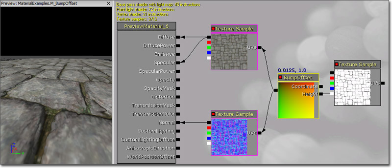
最終的なマテリアル ネットワークは、上記のような構造になります。このケースでは、ディフューズ マテリアルがマテリアルのスペキュラ マップとして機能しますが、すべてのネットワークでこのようにする必要はありません。Glow (発光)
 このマテリアルは、 Emissive (エミッシブ) 入力チャンネルを使用してサーフェスの一部を発光させています。すなわち、光源がない場合でも充分に明るくさせることが可能だということになります。このエフェクトが役立つのは、次のサーフェスを作成する場合です。すなわち、ライト (ワールド内におけるライトの視覚的な表現として使用される物理的なメッシュ)、パーティクル エフェクト、その他ライトを発するように見える必要があるサーフェスを作成する場合です。 Lightmass とともに使用される場合は、サーフェス自体が、ライトを発する Emissive 入力チャンネルによって、エリアの光源として利用することができます。
(フルサイズの表示には画像をクリック)
このマテリアルは、 Emissive (エミッシブ) 入力チャンネルを使用してサーフェスの一部を発光させています。すなわち、光源がない場合でも充分に明るくさせることが可能だということになります。このエフェクトが役立つのは、次のサーフェスを作成する場合です。すなわち、ライト (ワールド内におけるライトの視覚的な表現として使用される物理的なメッシュ)、パーティクル エフェクト、その他ライトを発するように見える必要があるサーフェスを作成する場合です。 Lightmass とともに使用される場合は、サーフェス自体が、ライトを発する Emissive 入力チャンネルによって、エリアの光源として利用することができます。
(フルサイズの表示には画像をクリック)
 マテリアルのディフューズカラーは、 TextureSample のアルファ チャンネルから得られます。
TextureSample の R および G、B チャンネルはすべて、独立したマスクとして使用されます。これらは、それぞれ赤、緑、青の Constant3Vectors と掛け合わされます。次に、これらは一連の If 式に渡されます。この if 式は、 Sine (サイン) 式の出力と Constant の値と比較することによって、3 つのカラーを交替させることができます。最後の If 式が Emissive 入力チャンネルに接続されることによって、発光する文字を作ります。
マテリアルのディフューズカラーは、 TextureSample のアルファ チャンネルから得られます。
TextureSample の R および G、B チャンネルはすべて、独立したマスクとして使用されます。これらは、それぞれ赤、緑、青の Constant3Vectors と掛け合わされます。次に、これらは一連の If 式に渡されます。この if 式は、 Sine (サイン) 式の出力と Constant の値と比較することによって、3 つのカラーを交替させることができます。最後の If 式が Emissive 入力チャンネルに接続されることによって、発光する文字を作ります。
Transparency (透明性)
この例では、Opacity (オパシティ、不透明) または OpacityMask 入力チャンネルを利用して、透明なマテリアルを作成します。Masked Transparency (マスクされた透明性)
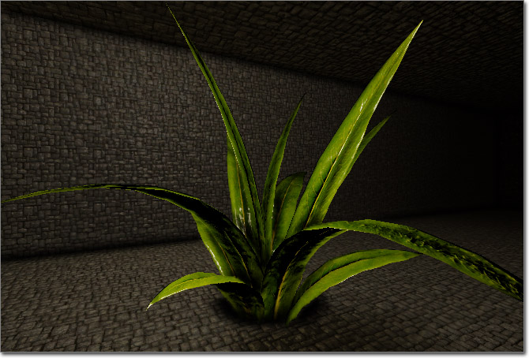
このマテリアルは、マスクされた Transparency を使用しています。つまり、サーフェスが完全に不透明であるか、完全に透明であるかのどちらかであるということになります。これを利用して、あるサーフェスの一部を非表示にすることができます。その結果、そのサーファスは、下にあるジオメトリよりも複雑に見えるようになります。たとえば、木や植物の葉、草の葉では、通常、単純なプレーンを使用するとともに、このテクニックを用いて、葉の輪郭の外側のメッシュの一部を非表示にすることができます。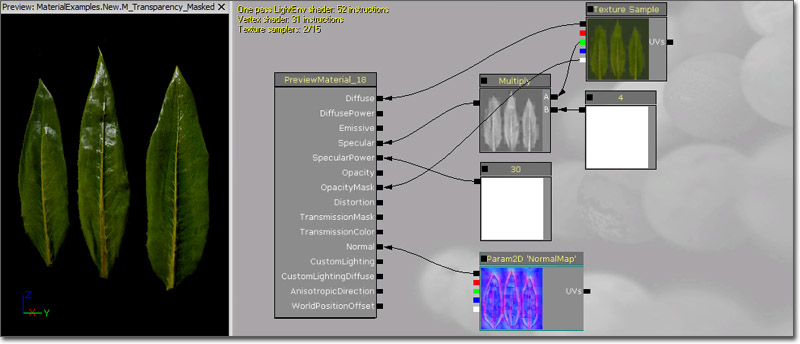
ディフューズカラーは、ディフューズ テクスチャによって制御されています。 スペキュラカラーは、ディフューズ テクスチャの緑のチャンネルから得られます。一方、明度は Constant 4.0 を掛けられることによって増幅します。 ディフューズ テクスチャは、アルファ チャンネルの中に不透明なマスクを含んでいます。これは、OpacityMask 入力チャンネルに接続されます。マテリアルのプロパティ内で Blend Mode を BLEND_Masked に設定すると、OpacityMask が使用されるようになり、その結果、マテリアルのうちで、オパシティ (不透明) マスクが白い部分 (正確には、Opacity Mask Clip の値よりも大きい値をもつ部分) だけが見えるようになります。 法線マップ は、Normal 入力チャンネルに接続されることによって、光源処理の精度を上げることができます。 SoftMasked されたBlend Mode も、これと非常によく似たエフェクトをもたらします。セットアップも同じです。Translucency (半透明)
 このマテリアルは、Translucency を使用することによって、完全には透明でも不透明でもないサーフェスを作成しています。すなわち、透明性の程度が変化しているのです。
(フルサイズの表示には画像をクリック)
このマテリアルは、Translucency を使用することによって、完全には透明でも不透明でもないサーフェスを作成しています。すなわち、透明性の程度が変化しているのです。
(フルサイズの表示には画像をクリック)
深度ベースの Transparency (透明性)
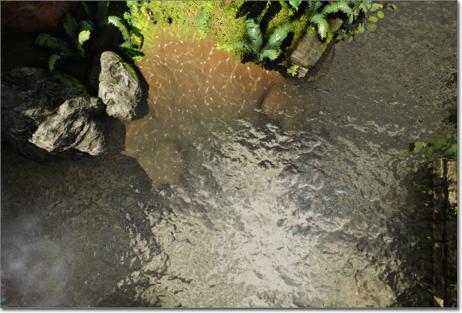
このマテリアルでは、深度の計算が使用されています。あるサーフェスがその背後にあるサーフェスからどのくらい離れているかということに基づいて計算し、サーフェスの透明性に変化をもたせています。この機能は DepthBiasAlpha 式の機能と似ていますが、完全に調整できるのはこの機能だけです。これが極めて有効に働くのは、岸に近い水面の自然な様子をシミュレートするマテリアルを作成する場合です。 (フルサイズの表示には画像をクリック)Refraction (屈折)
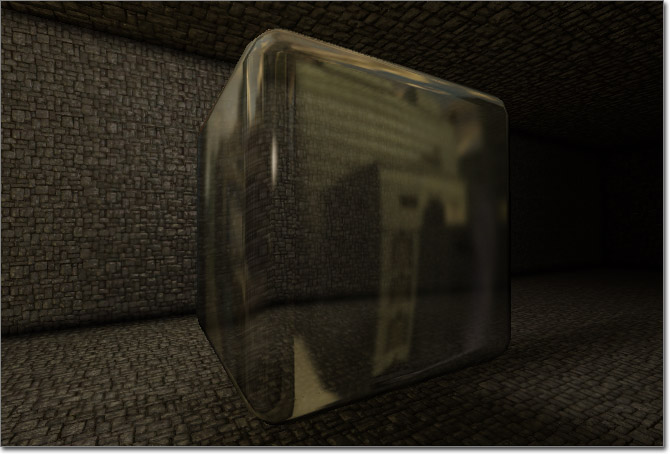
このマテリアルは、Transparency (透明性) と Distortion (歪み) 入力チャンネルを使用して、ライトがサーフェスを通るときに、ライトの屈折をシミュレートしています。このエフェクトが役立つのは、ガラスや水のサーフェスや蒸気や熱波などのパーティクルエフェクトを作成する場合です。 (フルサイズの表示には画像をクリック) ディフューズカラーは、 環境マップ によって制御されています。これは、 指数 0.5 がついた Fresnel (フレネル) が乗じられることによって、サーフェスがカメラから遠くを向くにつれて、徐々に反射がより明確になるようにすることができます。
SpecularPower (スペキュラ累乗) は、値が 150.0 の Constant によって制御されています。これによって、ハイライトは著しく焦点化されています。他方、スペキュラカラーは、値が 1.0 の Constant であり、ハイライトはかなり明るくなっています。
オパシティは同じ Fresnel 式で制御され、 Constant 0.75 と掛け合わされます。
Distortion (歪み) 入力チャンネルの値は、(5.0, 5.0, 0.0) の値をもつ Constant3vector と 1.0 の 指数 がついた Fresnel を掛け合わせて算出されています。
ディフューズカラーは、 環境マップ によって制御されています。これは、 指数 0.5 がついた Fresnel (フレネル) が乗じられることによって、サーフェスがカメラから遠くを向くにつれて、徐々に反射がより明確になるようにすることができます。
SpecularPower (スペキュラ累乗) は、値が 150.0 の Constant によって制御されています。これによって、ハイライトは著しく焦点化されています。他方、スペキュラカラーは、値が 1.0 の Constant であり、ハイライトはかなり明るくなっています。
オパシティは同じ Fresnel 式で制御され、 Constant 0.75 と掛け合わされます。
Distortion (歪み) 入力チャンネルの値は、(5.0, 5.0, 0.0) の値をもつ Constant3vector と 1.0 の 指数 がついた Fresnel を掛け合わせて算出されています。
Sub-Surface Scattering (表面下散乱)
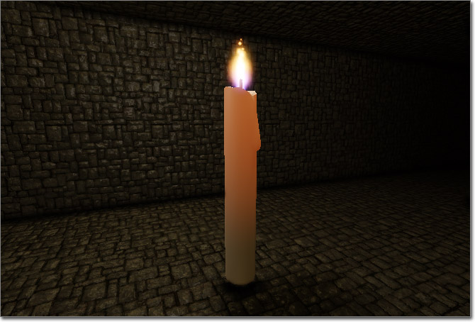
このマテリアルは、Transmission (光の通過) 入力チャンネルを使用して、表面化散乱のエフェクトをシミュレートしています。このテクニックが役立つのは、肌やロウを作ったり、他にも、透明ではないものの反対側から光源が透けて見えるようなタイプのマテリアルを作成する場合です。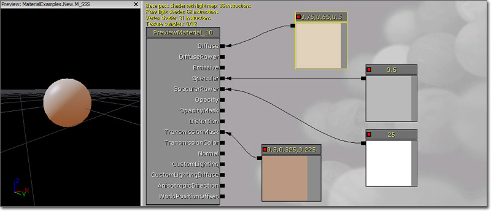
ディフューズカラーは、 Constant3vector によって制御されています。ただし、作成されているマテリアルによっては、 TextureSample が使用される場合もあります。 SpecularPower は、値が 25.0 の Constant によって制御されていて、ハイライトがかなり焦点化されています。他方、スペキュラカラーは、値が 0.5 の Constant であり、ハイライトをかなり弱めています。 例の中の TransmissionMask (光の通過マスク) は、暗いバージョンのディフューズカラーをともなった Constant3vector をもっています。これは、ディフューズカラーの場合と同様に、 TextureSample でも可能です。Detail (ディテール)
 このマテリアルでは、複数のディフューズ マップと法線マップを組み合わせています。1 つは、離れた位置の大まかなディテールを表示するためのもので、もう1つは、接近した位置の細かいディテールを表示するためのものです。石や岩、コンクリートのマテリアルによく使用されます。
このマテリアルでは、複数のディフューズ マップと法線マップを組み合わせています。1 つは、離れた位置の大まかなディテールを表示するためのもので、もう1つは、接近した位置の細かいディテールを表示するためのものです。石や岩、コンクリートのマテリアルによく使用されます。
 単一の TextureCoordinate (テクスチャ座標) の式が、2 つの Constants と掛け合わされます。1 つは、0.5 の値をもっており、もう 1 つは 4.0 の値をもちます。この後、ディフューズマップと法線マップの UV 入力に接続されます。0.5 の値と掛け合わされた TextureCoordinate は、ディフューズおよび法線マップ TextureSamples の UV 入力に接続されます。これは、大まかで、離れた位置のディテールのためのものです。0.4 の値と掛け合わされた TextureCoordinate も、ディフューズおよび法線マップ TextureSamples の UV 入力に接続されますが、こちらは細かく、接近した位置のディテールのためのものです。これら 2 つの TextureSamples は、 Add (加える) の式を使ってまとめられてから、Diffuse 入力チャンネルに接続されます。2 つの法線マップ TextureSamples は、別の Add 式を使ってまとめられてから、Normal 入力チャンネルに接続されます。
例は、コンクリートのマテリアルのためのものなので、スペキュラのハイライトはかすかで、かなり拡散しています。
単一の TextureCoordinate (テクスチャ座標) の式が、2 つの Constants と掛け合わされます。1 つは、0.5 の値をもっており、もう 1 つは 4.0 の値をもちます。この後、ディフューズマップと法線マップの UV 入力に接続されます。0.5 の値と掛け合わされた TextureCoordinate は、ディフューズおよび法線マップ TextureSamples の UV 入力に接続されます。これは、大まかで、離れた位置のディテールのためのものです。0.4 の値と掛け合わされた TextureCoordinate も、ディフューズおよび法線マップ TextureSamples の UV 入力に接続されますが、こちらは細かく、接近した位置のディテールのためのものです。これら 2 つの TextureSamples は、 Add (加える) の式を使ってまとめられてから、Diffuse 入力チャンネルに接続されます。2 つの法線マップ TextureSamples は、別の Add 式を使ってまとめられてから、Normal 入力チャンネルに接続されます。
例は、コンクリートのマテリアルのためのものなので、スペキュラのハイライトはかすかで、かなり拡散しています。
UV 座標をアニメート
以下の例では、テクスチャの UV 座標をアニメートするさまざまな方法を示しています。使用する式は、 Panner および Rotator です。回転
(動画プレビューは、マウスポインターを画像上にかざしてください)
 速度 5 の Rotator が、Diffuse の TextureSample に接続されています。その出力が、マテリアルノードの Diffuse 入力チャンネルに接続されています。
ディフューズテクスチャのアルファ チャンネルは、オパシティ マスクを含んでいます。これは、他の円のマスクと掛け合わされることによって、回転するテクスチャのうちの無関係な可視部分 (すなわち、回転するテクスチャを取り巻くコーナー) を除去します。 Multiply の結果は、OpacityMask 入力チャンネルに接続され、blend mode は BLEND_Masked が使われます。
速度 5 の Rotator が、Diffuse の TextureSample に接続されています。その出力が、マテリアルノードの Diffuse 入力チャンネルに接続されています。
ディフューズテクスチャのアルファ チャンネルは、オパシティ マスクを含んでいます。これは、他の円のマスクと掛け合わされることによって、回転するテクスチャのうちの無関係な可視部分 (すなわち、回転するテクスチャを取り巻くコーナー) を除去します。 Multiply の結果は、OpacityMask 入力チャンネルに接続され、blend mode は BLEND_Masked が使われます。
Panning (パン) とDistortion (歪み)
(動画プレビューは、マウスポインターを画像上にかざしてください)

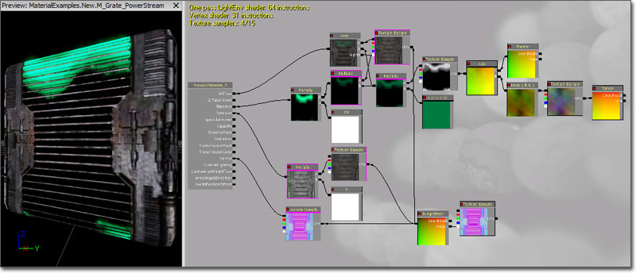
ディフューズ チャンネルは、パン エフェクトとマスク エフェクトの生成、および格子の基礎テクスチャの提供に使用されます。ディフューズ チャンネルには、パン エフェクトと格子を組み合わせる Linear Interpolate Modifier が直接パスされます。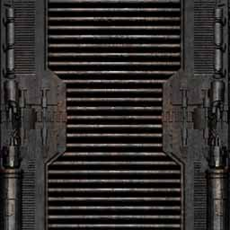
ベースとなる格子テクスチャ (上記画像) が、Linear Interpolate Modifier (線形補間モディファイア) の A チャンネルに渡されるとともに、 BumpOffset (バンプオフセット) が、ベースとなるテクスチャのための Texture Sample の Coordinates (座標) チャンネルに渡されます。 BumpOffset が、テクスチャ自身をオクルードするエフェクトを作成します。 LinearInterpolate (線形補間) の B チャンネルに、パンするパワーストリームのエフェクトが生成されます。Modifier (モディファイア) のチェーンの右端には、 Panner (パナー) があり、虹色の雲のような TextureSample にリンクされています。これによってテクスチャが X 方向に 0.2 の速度でパンするようになります。以下は、その Texture Sample で使用されているテクスチャです。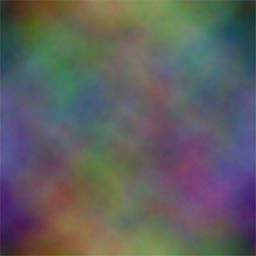
次に、 ComponentMask (成分マスク) が適用されて、赤と緑の成分だけが Add (追加) の式に渡されます。 Add の式は、SpeedX が 0.0でSpeedY が 0.2である Panner を、パンする Texture Sample の R および G 成分に付け加えます。 Add 式の結果は、 Panner をあたかもテクスチャのように扱い、テクスチャのカラーを、 Add 式の B チャンネルに渡されるテクスチャに追加したものになるのです。これは、マテリアル エディタで色と数値が識別されないためです。 ここで、 Add 式の結果がシンプルな Beam Texture の UV に渡されるとき、数値として使用されているテクスチャのエフェクトが転換されます。複雑な一連の Modifier を他の Sample Texture の UV に渡すことによって、できあがるテクスチャは歪むとともに改変されて、そのテクスチャ全体にわたってより有機的で不規則なさざ波をともなってパンするようになります。以下、ベースとなっているテクスチャとすべての Modifier を適用した後のテクスチャを対照的に表示したものです。|
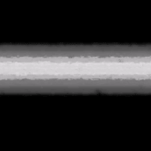 |
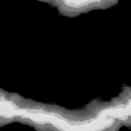 |
|
|
|
|
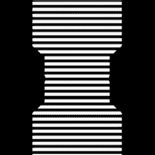
Linear Interpolate Modifier にリンクされ、ディフューズ チャンネルにパスされた複数の Modifier により、マテリアルには格子テクスチャ、および格子マスクの裏を流れる鈍い緑色の有機的なパワー ビームが表示されます。 エミッシブ チャンネルは、格子マスクの裏の緑色のパワー ビームを明るくするためのみの目的で使用されています。このためには、Linear Interpolate (線形補間) の B チャンネルに渡される Multiply Modifier も、別の Multiply Modifier に渡され、Constant と掛け合わされます。緑色のパワー ビームを非常に明るくするため、Constant の R 値が 20.0 に設定されています。その結果の Multiply Modifier は、マテリアルのエミッシブ チャンネルにパスされます。 Sample Texture Modifier を経由して、同じベース テクスチャを、ディフューズ チャンネルで格子に使用されているスペキュラ チャンネルに適用することにより、光源からのグレアを低減することができます。 このノーマル チャンネルには、標準の BumpOffset 法線マップが含まれています。これにより、格子を見る位置によって格子が格子自体を覆うというエフェクトが実現します。以下の法線マップは、HeightRatio と ReferencePlane がデフォルト値に設定されている BumpOffest にリンクされており、逆にこの BumpOffset は、同じ法線マップの別のインスタンス、およびディフューズ チャンネルのベース テクスチャにリンクされています。最後に、一連の法線マップと BumpOffset Modifier が、最終的なマテリアルのノーマル チャンネルにパスされます。 以下は、このマテリアルで使用されているベースの法線マップです。
指向性エフェクト
以下の例では、方向ベースのエフェクトについて説明します。方向ペースのエフェクトとは、マテリアルが見られている方向に依存するエフェクトのことです。Two Tone (ツートン)
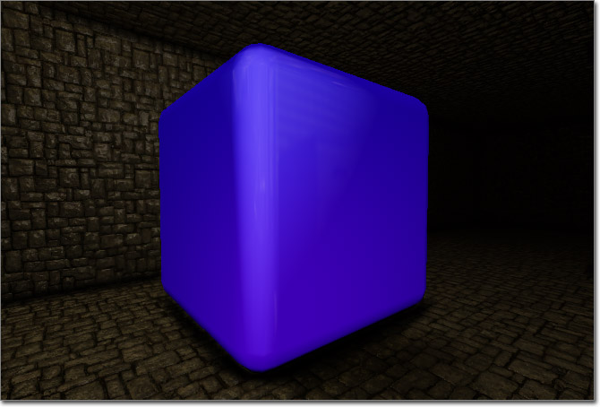
このマテリアルは、ツートンのサーフェスをシミュレートしています。このエフェクトは、ある方向からサーフェスを見た場合に見えたが、反対の方向から見ると別の色に見えるというものです。このサーフェスは、非常に Glossy (光沢)? があり、 環境マップ が使われています。ある種の車の塗料と類似しています。 (フルサイズの表示には画像をクリック) ディフューズカラーは、ツートンエフェクトと 環境マップ を結合したものです。 環境マップ は、0.1625 の値の Constant と掛け合わされます。次にこれは、シーンの背後で行われる基礎的な Specularity (スペキュラリティ、鏡面反射性)? 計算と同様の計算の結果と掛け合わされます。 LightVector および ReflectionVector (反射ベクター) が、 DotProduct (ドットプロダクト) 式に渡されます。次に、その結果は、 ConstantClamp (定数クランプ) 式を使用してクランプされるとともに、0.5 という Exp (指数) 入力をともなって、 Base (基数) 入力として、 Power (累乗) に渡されます。これらの一連の計算結果は、サーフェスからの反射が光源を指している場合に、1.0 という値になります。この値は、反射が光源に対して垂直の場合に 0.0 になり、その間が補間されます。これが Specularity (スペキュラリティ、鏡面反射性)? の機能です。次に、この値は 環境マップ と掛け合わされます。
ツートンエフェクトは、上で解説した反射と同様のセットアップを用います。 LightVector および ReflectionVector (反射ベクター) が、 DotProduct (ドットプロダクト) 式に渡されます。次に、その結果は、 ConstantClamp (定数クランプ) 式を使用してクランプされるとともに、3.0 という Exp (指数) 入力をともなって、 Base (基数) 入力として、 Power (累乗) に渡されます。これらの一連の計算結果は、サーフェスが見られる角度とサーフェスがライトを当てられる角度とが同一の場合に、1.0 という値になります。この値は、サーフェスが光源に対して垂直の場合に 0.0 になり、その間が補間されます。この値は、 LinearInterpolate (線形補間) 式の Alpha (アルファ) 入力として使われます。 LinearInterpolate (線形補間) 式の A および B のそれぞれは、 Constant3Vector と接続しています。1 つは、濃い青の (0.01, 0.0, 0.5) で、もう片方は、明るい青/紫 (0.125, 0.0, 1.25) です。これによって、光源の方向からサーフェスを見た場合に紫が適用され、光源に対して垂直なサーフェスを見た場合に青が適用されるようになります。
次に、 環境マップ ネットワークとツートンネットワークは、 Add 式を使って結合され、さらに、マテリアルノードの Diffuse (ディフューズ) 入力チャンネルに接続されます。
SpecularPower (スペキュラ累乗) は、1.25 という値をもつ Constant に制御されます。これは、ハイライトを拡散させます。他方、スペキュラカラーは、 紫の亜種である (0.1, 0.0, 1.2) という値をもつ Constant3Vector です。これは、ハイライトを目立たせますが、それほど派手にはしません。
ディフューズカラーは、ツートンエフェクトと 環境マップ を結合したものです。 環境マップ は、0.1625 の値の Constant と掛け合わされます。次にこれは、シーンの背後で行われる基礎的な Specularity (スペキュラリティ、鏡面反射性)? 計算と同様の計算の結果と掛け合わされます。 LightVector および ReflectionVector (反射ベクター) が、 DotProduct (ドットプロダクト) 式に渡されます。次に、その結果は、 ConstantClamp (定数クランプ) 式を使用してクランプされるとともに、0.5 という Exp (指数) 入力をともなって、 Base (基数) 入力として、 Power (累乗) に渡されます。これらの一連の計算結果は、サーフェスからの反射が光源を指している場合に、1.0 という値になります。この値は、反射が光源に対して垂直の場合に 0.0 になり、その間が補間されます。これが Specularity (スペキュラリティ、鏡面反射性)? の機能です。次に、この値は 環境マップ と掛け合わされます。
ツートンエフェクトは、上で解説した反射と同様のセットアップを用います。 LightVector および ReflectionVector (反射ベクター) が、 DotProduct (ドットプロダクト) 式に渡されます。次に、その結果は、 ConstantClamp (定数クランプ) 式を使用してクランプされるとともに、3.0 という Exp (指数) 入力をともなって、 Base (基数) 入力として、 Power (累乗) に渡されます。これらの一連の計算結果は、サーフェスが見られる角度とサーフェスがライトを当てられる角度とが同一の場合に、1.0 という値になります。この値は、サーフェスが光源に対して垂直の場合に 0.0 になり、その間が補間されます。この値は、 LinearInterpolate (線形補間) 式の Alpha (アルファ) 入力として使われます。 LinearInterpolate (線形補間) 式の A および B のそれぞれは、 Constant3Vector と接続しています。1 つは、濃い青の (0.01, 0.0, 0.5) で、もう片方は、明るい青/紫 (0.125, 0.0, 1.25) です。これによって、光源の方向からサーフェスを見た場合に紫が適用され、光源に対して垂直なサーフェスを見た場合に青が適用されるようになります。
次に、 環境マップ ネットワークとツートンネットワークは、 Add 式を使って結合され、さらに、マテリアルノードの Diffuse (ディフューズ) 入力チャンネルに接続されます。
SpecularPower (スペキュラ累乗) は、1.25 という値をもつ Constant に制御されます。これは、ハイライトを拡散させます。他方、スペキュラカラーは、 紫の亜種である (0.1, 0.0, 1.2) という値をもつ Constant3Vector です。これは、ハイライトを目立たせますが、それほど派手にはしません。
Rim Lighting (リムライト)
 このマテリアルは、 Edge Lighting (エッジライト) エフェクトを作り出す、「ハードコード化された」光源の生成を示しています。このテクニックの変種を使用することによって、光源をシミュレートすることができます。その場合、マテリアルのレンダリングによる負荷は著しく減少するにもかかわらず、ライトが当てられている外観が得られます。光源処理の負荷が大きいため、メッシュパーティクルがこのエフェクトを使用することがあります。
(フルサイズの表示には画像をクリック)
このマテリアルは、 Edge Lighting (エッジライト) エフェクトを作り出す、「ハードコード化された」光源の生成を示しています。このテクニックの変種を使用することによって、光源をシミュレートすることができます。その場合、マテリアルのレンダリングによる負荷は著しく減少するにもかかわらず、ライトが当てられている外観が得られます。光源処理の負荷が大きいため、メッシュパーティクルがこのエフェクトを使用することがあります。
(フルサイズの表示には画像をクリック)
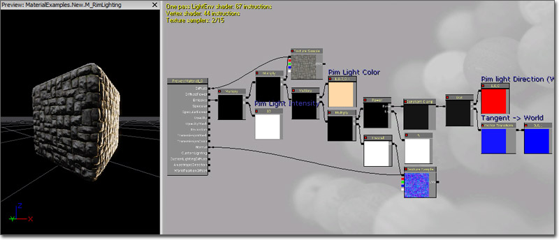
ディフューズカラーは、単に TextureSample によって制御されています。 エミッシブカラーは、メインのエフェクトの制御を受けます。(0.0, 0.0, 1.0) の値をもつ Constant3Vector は、Tangent (タンジェント) から World (ワールド) 座標に変換されます。本質的には、サーフェスのタンジェント ノーマルをワールド ノーマルに変換します。これは、(1.0, 0.0, 0.0) の値をもつ他の Constant3Vector とともに、 DotProduct に接続されます。この第 2 の Constant3Vector は、光源の方向を表します。 DotProduct の結果は、[0, 1] からクランプされ、さらにそれが、 Exp に接続される 5.0 の Constant とともに、 Power に渡されます。この値は、光源エフェクトの未処理量を制御します。この結果は、 指数 が 10 で、法線マップが Normal 入力に接続されている Fresnel (フレネル) と掛け合わされます。その結果、ライトが当たっている側面を直接見たときであっても、メッシュのエッジ付近にのみ光源処理されているように見えることになります。次に、この値は、ライトのカラーを表す Constant3Vector と掛け合わされます。さらに、ディフューズ テクスチャが同様にして掛け合わされます。最後に、この値は、10.0 の値をもつ Constant と掛け合わされます。これは、エッジライトの明度を制御するものです。最終的な結果は、Emissive (エミッシブ) 入力チャンネルに接続されます。 サーフェスのノーマルは、法線マップが適用されている TextureSample によって制御されます。シミュレートされた HDR
 上記画像のような、シミュレートされた HDR 光源を持つキューブ マップは、以下のモディファイアとテクスチャを使用して簡単に作成できます。
上記画像のような、シミュレートされた HDR 光源を持つキューブ マップは、以下のモディファイアとテクスチャを使用して簡単に作成できます。
 このエフェクトを生成するには、cubesample/reflection (キューブサンプル/反射) テクスチャから最も明るいピクセルを分離するとともに、これら分離したピクセルの明度を修正するコントロールを加えてから、ベースとなるキューブマップの上に戻します。この設定では、キューブ マップ自体は暗くなりますが、ハイライトの明るさは制御可能になっています。
これは、反射している明るい物体は、半透明や暗い表面でも明るく映るという、現実の反射効果を再現しています。これを、エディタ内からサンプル取得したキューブ マップに適用するには、キューブ テクスチャ サンプルの SRGB フラグを無効にします。これは無効のままにしておいても構いませんが、非常に暗くコントラストの強い反射となります。
このアプローチでは、最初にキューブ テクスチャの飽和を除去し、テクスチャから明るいピクセルを分離し、その結果を元のキューブ テクスチャに掛け合わせて色を再調整し、最後にこれをテクスチャ自体に追加します。これにより、不適切な色情報の適用を防ぐことができ、明るさの出力のみを調整できます。
このエフェクトを生成するには、cubesample/reflection (キューブサンプル/反射) テクスチャから最も明るいピクセルを分離するとともに、これら分離したピクセルの明度を修正するコントロールを加えてから、ベースとなるキューブマップの上に戻します。この設定では、キューブ マップ自体は暗くなりますが、ハイライトの明るさは制御可能になっています。
これは、反射している明るい物体は、半透明や暗い表面でも明るく映るという、現実の反射効果を再現しています。これを、エディタ内からサンプル取得したキューブ マップに適用するには、キューブ テクスチャ サンプルの SRGB フラグを無効にします。これは無効のままにしておいても構いませんが、非常に暗くコントラストの強い反射となります。
このアプローチでは、最初にキューブ テクスチャの飽和を除去し、テクスチャから明るいピクセルを分離し、その結果を元のキューブ テクスチャに掛け合わせて色を再調整し、最後にこれをテクスチャ自体に追加します。これにより、不適切な色情報の適用を防ぐことができ、明るさの出力のみを調整できます。
Snow (雪)
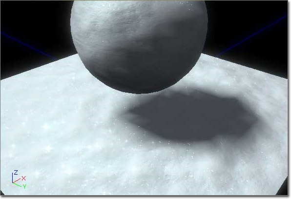
このマテリアルは、きらめく雪をシミュレートしています。 (フルサイズの表示には画像をクリック)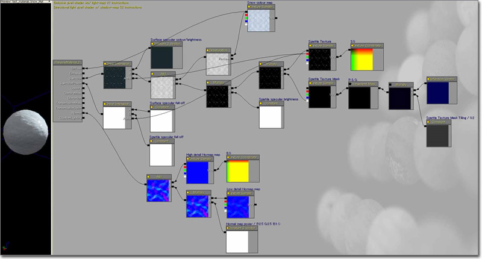
最初に、RBG チャンネルに 512x512 のサイズの雪テクスチャ (黒の背景に 1 ピクセルのサイズの白い点が分散している) を 1 つ作成し、輝きエフェクトのマスクとして使用するアルファ チャンネルでテクスチャをマスクします (Photoshop の「雲」フィルタを使用してコントラストを強くする)。また、使用しているエディタのバージョンが DDS の直接インポートに対応している場合は、異なる距離でも正しく表示される輝きテクスチャのミップマップ レベルを手動で作成することも可能です。このミップマップ レベルは、元の輝きテクスチャを切り取って、次のミップマップ レベルに貼り付けたりしただけのものです。 マテリアルエディタの中で、 Multiply (乗算) ノードを使用して、RGB とアルファチャンネルの両方をミックスします。(両方とも、異なるタイル処理プロパティをもつ別個のノードとして使用されます。) RBG チャンネル/ノードには、標準の TextureCoordinate (テクスチャ座標) ノードがプラグインされているため、このタイル処理を調節することができます。アルファ チャンネル/ノードには、 ComponentMask (成分マスク) 経由で ReflectionVector (反射ベクター) がプラグインされているため、R チャンネルと G チャンネルのみが使用され、マスクには、距離にかかわりなく固定サイズが適用されます。最後に、 Multiply (乗算) ノードに、 ScalarParameter (スケーラーパラメータ) を掛け合わせることによって、輝きの明るさを自由に変更できるようにします。 ここでの主な問題は、異なる距離でも輝きエフェクトを機能させることです。 Pixeldepth (ピクセル深度) を使用するよりも手動でミップマップを作成したほうが、著しく良い結果が得られます。また、マテリアル自体が必要とするノードも減少します。Wet (ウェット)
(動画プレビューは、マウスポインターを画像上にかざしてください)

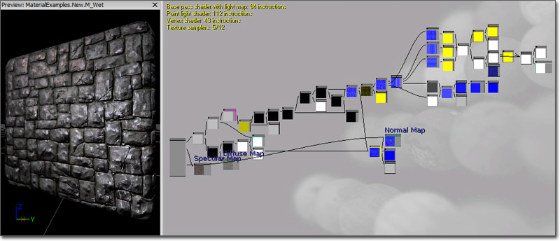